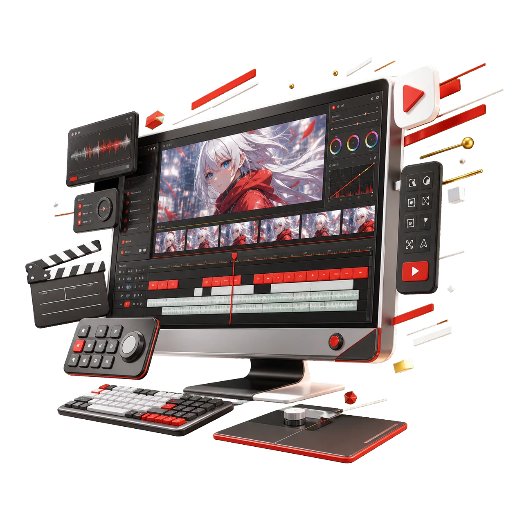
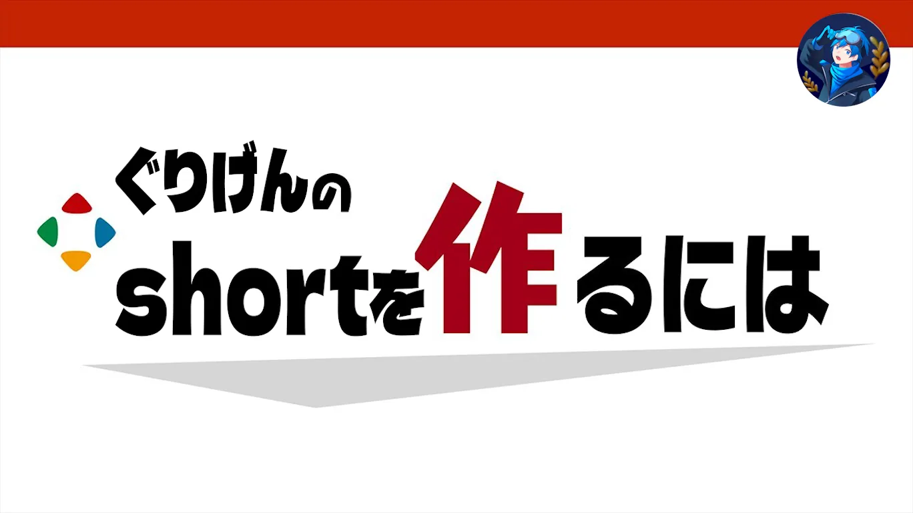

PRE-EDI ONLINE SCHOOL
AI時代に選ばれる、
「動画を面白くできる編集者」へ。
複数人の会話、複数音声、複数視点、カットの間、ツッコミテロップ、BGM・SEまで。
10時間を超える実践カリキュラムで、VTuber・配信者向けのエンタメ動画編集を学ぶオンラインスクール。
10H+ 総カリキュラム
ON DEMAND 録画教材
BEGINNER OK Premiere Pro 初心者でも受講可能
第1期・先着20名
第1期生は案件獲得コミュニティ永久無料

4 VOICES複数音声
MULTI CAM複数視点
STORY CUT面白さを編集
01 / WHY NOW
AI時代に、
エンタメ編集を学ぶ理由。
単純作業が速くなるほど、人に残るのは「何を、どう見せるか」という判断です。
これからは、文字起こし、基本的なカット、テロップなどの作業ほどAIで効率化されていきます。
その中で編集者として選ばれ続けるために必要なのは、操作の速さだけではありません。
- 01どの会話を残すか
- 02誰のリアクションを見せるか
- 03どの視点を使うか
- 04どこで笑いを作るか
- 05どの一言をオチにするか
- 06どの間を切り、どの間を残すか
プレエディでは、素材の中にある面白さを見つけ、視聴者に伝わる動画へ仕上げるための判断力を学びます。
02 / DIFFERENCE
使える機能を増やすだけでは、
面白い動画にはならない。
一般的な動画編集スクールを卒業しても、実際の案件では使えない編集になっているケースがあります。
プレエディでは、テロップ、BGM、SE、エフェクトをただ入れるのではなく、
「なぜ、この場面にこの演出を使うのか」
まで考えながら編集します。
編集ソフトを使える人→この人に頼むと動画が面白くなる編集者
03 / WHAT YOU LEARN
プレエディで学べるのは、
ソフト操作のその先。
素材を読む
複数人の会話から、前振り、リアクション、オチになる素材を見つける。
構成を作る
会話の順番と情報量を整え、視聴者が迷わない流れを組み立てる。
間を操る
不要な間と、笑いや余韻を生む間を見分け、テンポを設計する。
視点を選ぶ
複数視点から、状況や感情が最も伝わる画面を判断する。
演出を効かせる
ツッコミテロップ、BGM、SE、ズームを目的に合わせて使う。
仕事につなげる
見積もり、ポートフォリオ、案件応募まで、赤字を防ぎながら準備する。
04 / EXPAND YOUR FIELD
エンタメ編集の思考は、
他ジャンルにも応用できる。
見やすさ、話の流れ、飽きさせない構成、リアクションの活かし方。毎回この判断を積み重ねるから、応用範囲が広がります。
VTuber・配信者動画ゲーム実況Shorts企業PR採用動画対談動画商品紹介MV・演出系動画
VTuber事務所やプロゲーミングチームなど、エンタメコンテンツを扱う企業・活動者の編集案件へ挑戦する土台にもなります。
※案件獲得や特定企業への採用を保証するものではありません。05 / THE REALITY
正直、
楽な編集ではありません。
エンタメ動画編集は、一般的なビジネス系編集よりも作業量が多くなることがあります。
- 01音声トラックが複数ある
- 02複数視点の素材がある
- 03フルテロップが必要
- 04リアクションごとに画面を切り替える
- 05BGM、SE、演出を細かく調整する
ただし、難しくて手間がかかるからこそ、できる編集者がまだ少なく、差別化しやすい分野でもあります。
AI・プリセット・自動化ツールで単純作業を短縮し、人間は面白さの判断に集中します。
06 / LEARNING FORMAT
録画教材だから、
自分のペースで何度でも学べる。
プレエディは、決まった日時に参加するオンライン授業ではありません。本業や副業、活動と両立しながら、Premiere Proを実際に操作して進められます。
Premiere Proの基本操作ができる方向けですが、初心者でも取り組めるように解説します。
TOTAL CURRICULUM10時間超
解説・実践講義約7時間30分
ノーカット編集実演2時間30分以上
PAUSEREPLAYYOUR PACE
07 / CURRICULUM
全6章＋ノーカット編集実演
知識を並べるだけでなく、素材を見るところから、案件へ出す準備まで一本の流れで学びます。
エンタメ動画編集の本質
普通の動画編集との違い、視聴者を飽きさせない考え方、AI時代に編集者へ残る価値を学びます。
カット判断・会話構成・間の作り方
どの会話を残すか、前振りからオチまでをどう構成するか、笑いになる間と不要な間の違いを学びます。
テロップ・BGM・SE・演出
ツッコミテロップ、BGM、SE、ズーム、エフェクトを、場面に合わせて使う方法を学びます。
複数音声・複数視点の編集
複数人が同時に話す素材の整理、主軸音声の決め方、状況が伝わる視点切り替えを学びます。
AIを使った編集効率化
AIによる切り抜き候補の抽出、3パターンのカット案生成、自動カットツールへの取り込み方法を学びます。
案件獲得・見積もり・ポートフォリオ
赤字を防ぐ見積もり、案件で評価されるポートフォリオ、単価を上げるための考え方を学びます。
実際の編集作業をノーカットで見る
講師が実際に動画を編集する工程を見ながら、どこを切り、どの視点を使い、どこにテロップを入れ、どのBGM・SEを選ぶのか。Premiere Proのタイムライン上で実務の判断を学びます。
08 / AI WORKFLOW
AIは編集者を消すものではなく、
判断へ集中するための道具にする。
AI CUT ASSIST3 CUT PATTERNS
TOOL 01
AI切り抜き・自動カットツール
AIで素材を整理し、切り抜き候補と3パターンのカット案を作成。自動カットツールへ取り込む流れまで学びます。
- 切り抜き候補の抽出
- カット案の比較
- 単純作業を短縮
ESTIMATE AIWORKLOAD → PRICELOSS CHECK / OK
TOOL 02
案件見積もりAI
尺、素材数、音声、テロップ、演出、修正条件を整理し、見積もりの抜け漏れや赤字を防ぐために活用します。
- 作業量を言語化
- 見積もり漏れを確認
- 最終判断は自分で行う
09 / FEEDBACK
実際に作った動画へ、
実践的なフィードバック。
教材を見て終わりではなく、実際に編集した動画への添削を行います。
月1〜2本程度を目安に提出でき、厳密な回数上限は設けない予定です。
REVIEWING / TIMELINE 01
- カットのテンポ
- 会話のつながり
- テロップの見せ方
- BGM・SEの使い方
- 視点切り替え
- 動画全体の構成
10 / AFTER GRADUATION
学んで終わりではなく、
案件へ挑戦できる環境へ。
卒業後は、プレエディ卒業生限定の案件獲得コミュニティへ参加できます。
- 活動者・企業から届いた案件情報の共有
- 編集案件への応募
- ポートフォリオや営業についての相談
- 編集者同士の情報交換
- 案件獲得や単価アップのノウハウ共有
第1期20名限定コミュニティ参加費・永久無料
※案件獲得を保証するものではありません。案件ごとに募集条件・選考が発生する場合があります。11 / INSTRUCTOR & WORKS
エンタメ動画の現場で使う判断を、
実際の編集画面で伝える。
INSTRUCTOR / SUPERVISOR
クリックスch
動画を派手にするためではなく、視聴者へ面白さを届けるためのカット、テロップ、音、視点選びをカリキュラムへ落とし込みます。

12 / VOICES
活動者から寄せられた、
プレエディへの期待の声。
VTuber・配信者と、エンタメ編集を学んだ編集者がつながる未来へ。

活動者にとって、自分の動画に合った編集者さんを見つけるのは意外と難しいので、安心して編集をお願いできる方と繋がれるサービスとして期待しています！

VTuber・配信者向けの編集に理解がある編集者さんと繋がれる場所として、とても期待しています！複数人コラボや配信切り抜きなど、活動者のニーズに寄り添った編集者さんが増えるのは本当にありがたいです。動画編集者を探す選択肢として、今後ぜひ活用させていただきたいと思います！

質の高いエンタメ動画編集を学んだ編集者と出会える手厚いサービスです！
13 / FIRST CLASS OFFER
第1期・先着20名限定
最初に参加していただく20名へ、先行価格とコミュニティ永久無料の特典をご用意します。
FIRST 20 MEMBERS ONLY
通常価格198,000円
第1期先行価格98,000円
100,000円 OFF
第1期限定特典案件獲得コミュニティ
参加費・永久無料
参加費・永久無料
第1期20名の受付終了後は、内容の追加・サポートの拡充にあわせて値上げする予定です。
無料5大特典＋第1期先行案内を受け取る→14 / LINE FREE GIFTS
LINE登録で、
無料5大特典をプレゼント。
受講前から使えるチェックリストやAIツールをまとめて受け取れます。
- 01カット判断チェックリストCUT JUDGEMENT CHECK
- 02AI切り抜き候補出し＆自動カットツールAI CUT ASSIST
- 03王道ツッコミテロップ一覧表TSUKKOMI TEXT LIST
- 04テロップデータ80選80 TEXT PRESETS
- 05案件見積もりAIESTIMATE AI
0円で受け取るLINEで無料5大特典を受け取る→
15 / FAQ
よくある質問
受講できます。Premiere Proの基本操作ができる方向けですが、初心者でも取り組めるように解説します。教材を止めたり、繰り返したりしながら自分のペースで進められます。
いいえ。プレエディは録画教材を自分のペースで視聴する形式です。本業、副業、配信活動などと両立しながら、好きな時間に何度でも学べます。
総カリキュラムは10時間を超えます。解説・実践講義が約7時間30分、講師の実際の編集作業を見られるノーカット編集実演パートが2時間30分以上です。
はい。月1〜2本程度を目安に提出でき、厳密な回数上限は設けない予定です。カット、会話構成、テロップ、BGM・SE、視点切り替えなどを実践基準でフィードバックします。
案件獲得を保証するものではありません。活動者・企業から届いた案件情報の共有や応募機会、営業・ポートフォリオ相談などを行う予定ですが、案件ごとに募集条件や選考が発生する場合があります。第1期20名は参加費が永久無料です。
プレエディでは、1080pのMP4素材を使用し、4人分の複数音声・複数視点、フルテロップ、BGM・SE・ズーム・エフェクトなどを取り入れた実践編集を行います。メモリ16GBでも受講・編集は可能ですが、より快適に進めたい場合は32GB以上を推奨します。
- OS
- Windows 11 64bit
- CPU
- Intel第11世代以降、またはAMD Ryzen 3000シリーズ以降
- メモリ
- 16GB以上
- GPU
- GPUメモリ4GB以上
- ストレージ
- SSD 512GB以上
- 空き容量
- 100GB以上を推奨
- 画面解像度
- 1920×1080以上
- CPU
- Intel Core i7、またはAMD Ryzen 7クラス以上
- メモリ
- 32GB以上
- GPU
- GPUメモリ8GB以上
- ストレージ
- NVMe SSD 1TB以上
はい。無料5大特典は受講特典ではなく、LINE登録特典です。LINEから第1期の先行案内も受け取れます。
FINAL / JOIN THE FIRST CLASS
AIに任せる編集ではなく、
AIを使いこなし、面白さを作る編集者へ。
まずは無料5大特典を受け取り、第1期の先行案内をご確認ください。
第1期先着20名198,000円 → 98,000円案件獲得コミュニティ永久無料
LINEで無料5大特典と第1期先行案内を受け取る→